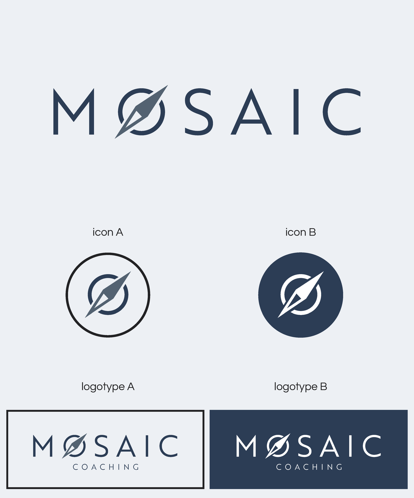
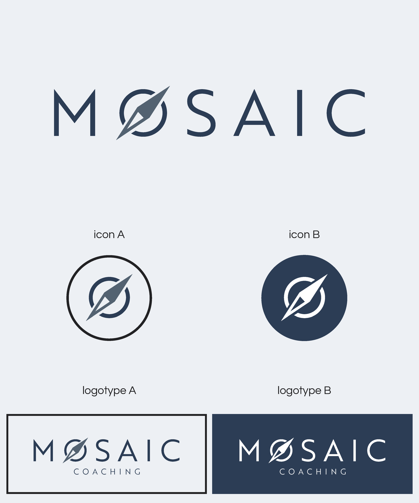

Mosaic Coaching
Mosaic Coaching was looking for a simple, bold logo which represented their core mission—guiding and transforming leaders.

Mosaic Coaching was looking for a simple, bold logo which represented their core mission—guiding and transforming leaders.
